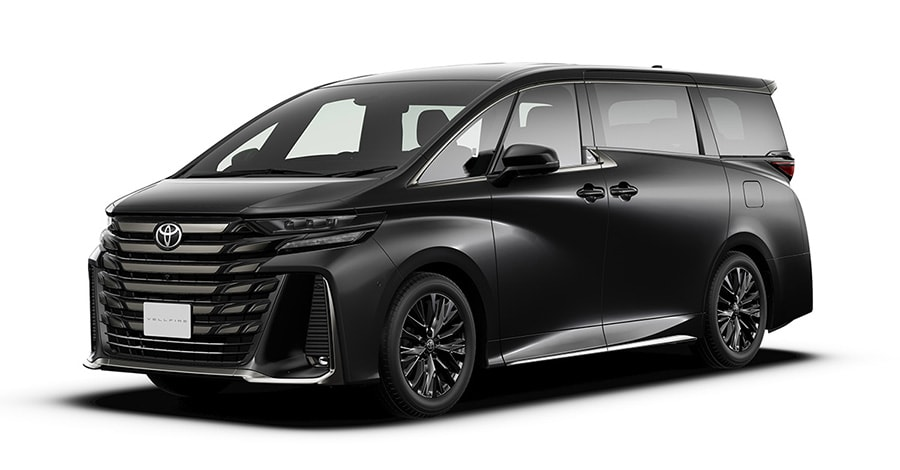

Toyota
Toyota Alphard
فان فاخر يوفر أعلى مستويات الراحة والتقنيات، ويعد من أفخم سيارات Toyota العائلية.
فان فاخر يوفر أعلى مستويات الراحة والتقنيات، ويعد من أفخم سيارات Toyota العائلية.

| المحرك | 2.5 لتر + نظام هجين |
| عدد الأسطوانات | 4 |
| القوة | 250 حصان (إجمالي النظام) |
| عزم الدوران | 239 نيوتن متر |
| ناقل الحركة | e-CVT |
| نظام الدفع | رباعي E-Four |
| التسارع (0-100) | 8.8 ثانية |
| السرعة القصوى | 180 كم/س |
| عدد المقاعد | 7 |
| نوع الوقود | هجين (بنزين + كهرباء) |